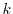
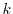
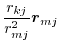

Distance is defined by points  and
and  :
:
| (A.37) |
| (A.38) |
The first derivatives of  with respect to Cartesian coordinates are:
with respect to Cartesian coordinates are:
| (A.39) | |||
| (A.40) |
Angle is defined by points  ,
,  , and 
, and spanned by vectors
, and 
, and spanned by vectors
 and
:
and
:
| (A.41) |
The first derivatives of  with respect to Cartesian coordinates are:
with respect to Cartesian coordinates are:
| (A.42) | |||
| (A.43) | |||
| (A.44) |
These equations for the derivatives have a numerical instability when
the angle goes to 0 or to 180 .
Presently, the problem is `solved' by testing for the size
of the angle; if it is too small, the derivatives are set to 0
in the hope that other restraints will eventually pull the angle
towards well behaved regions. Thus, angle restraints of 0 or
180
.
Presently, the problem is `solved' by testing for the size
of the angle; if it is too small, the derivatives are set to 0
in the hope that other restraints will eventually pull the angle
towards well behaved regions. Thus, angle restraints of 0 or
180 should not be used in the conjugate gradients or molecular dynamics
optimizations.
should not be used in the conjugate gradients or molecular dynamics
optimizations.
Dihedral angle is defined by points  ,
,  ,
, and
,
, and  (
):
(
):
| sign | (A.45) |
| sign sign | (A.46) |
The first derivatives of  with respect to Cartesian coordinates are:
with respect to Cartesian coordinates are:
| (A.47) |
| (A.48) |
| (A.49) | |||
| (A.50) | |||
| (A.51) | |||
| (A.52) | |||
| (A.53) | |||
| (A.54) |
These equations for the derivatives have a numerical instability when the angle goes to 0. Thus, the following set of equations is used instead [van Schaik et al., 1993]:
| (A.55) | |||
| (A.56) | |||
|  | (A.57) | ||
| (A.58) | |||
| (A.59) | |||
| (A.60) |
The only possible instability in these equations is when the length of
the central bond of the dihedral,
, goes to 0. In such a case,
which should not happen, the derivatives are set to 0. The expressions for
an improper dihedral angle, as opposed to a dihedral or dihedral angle,
are the same, except that indices
are permuted to
.
In both cases, covalent bonds  ,
, and
are defining
the angle.
,
, and
are defining
the angle.
This is the accessibility value calculated by the PSA algorithm (see model.write_data()). This is usually set by the last call to Restraints.make() or Restraints.make_distance(). First derivatives are not calculated, and are always returned as 0.
Atomic density for a given atom is simply calculated as the number of atoms within a distance energy_data.contact_shell of that atom. First derivatives are not calculated, and are always returned as 0.
The absolute atomic coordinates
,
and
are available
for every point  , primarily for use in anchoring points to planes, lines
or points. Their first derivatives with respect to Cartesian coordinates
are of course simply 0 or 1.
, primarily for use in anchoring points to planes, lines
or points. Their first derivatives with respect to Cartesian coordinates
are of course simply 0 or 1.